[ ENG 6806 // FALL 2026 // WEEK OF OCTOBER 19, 2026 ]
(look, no hurricanes! *knocks wood*)
Conversation as interface
prompting as writing
outputs as code
generative text
distant reading
computational imagination
post-human photography
translation of image to text
moving pictures
images as data
talking to computers
algorithmic influence
software interfaces
creative coding
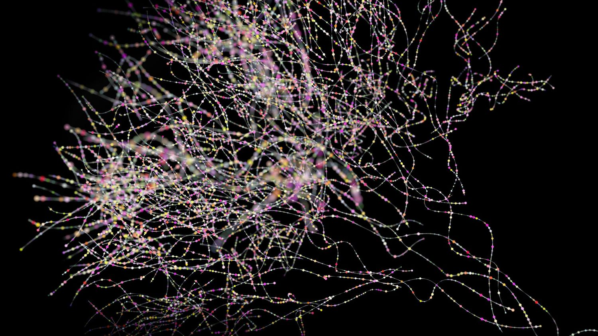
AI as computational interface
understanding agents
applications across disciplines
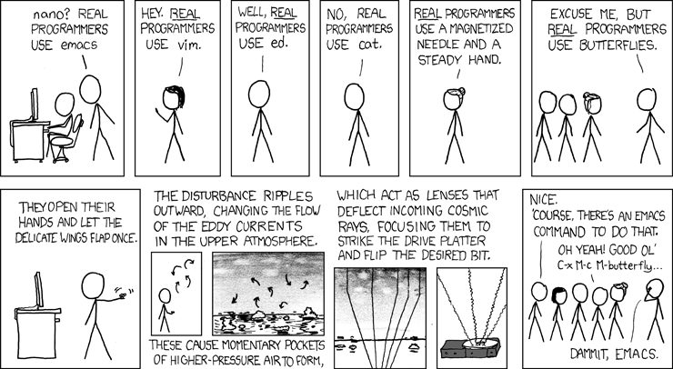
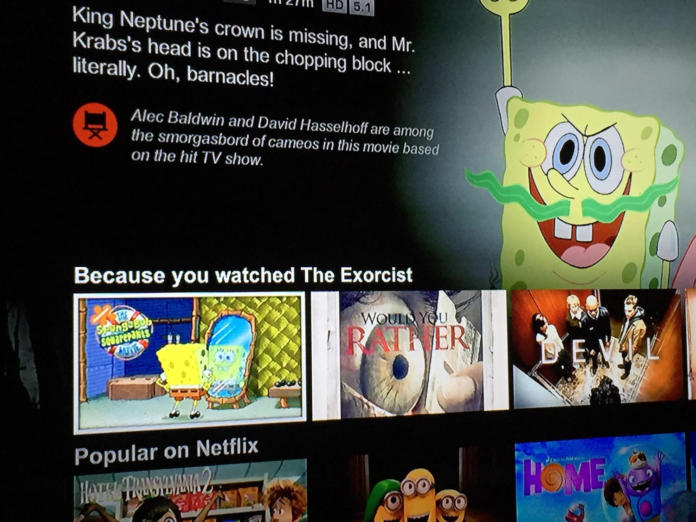
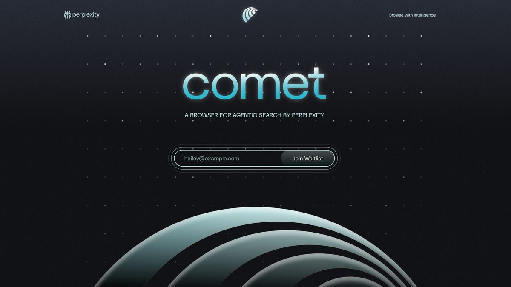
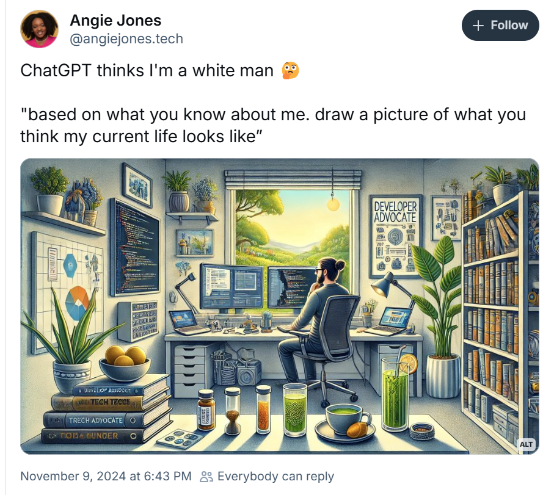
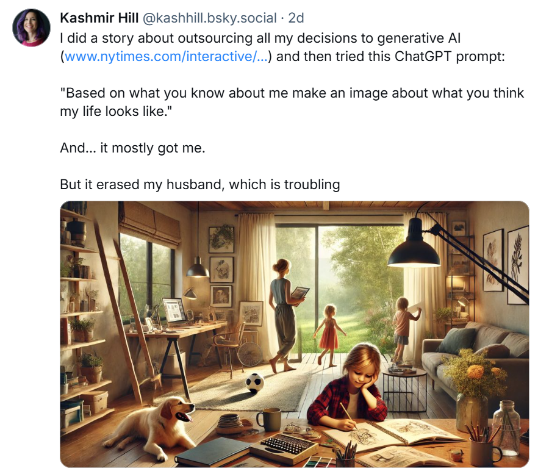
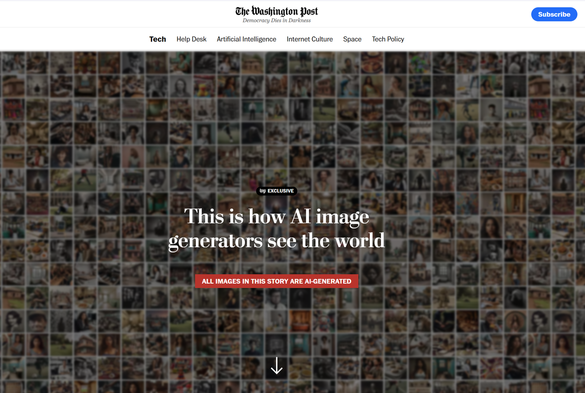
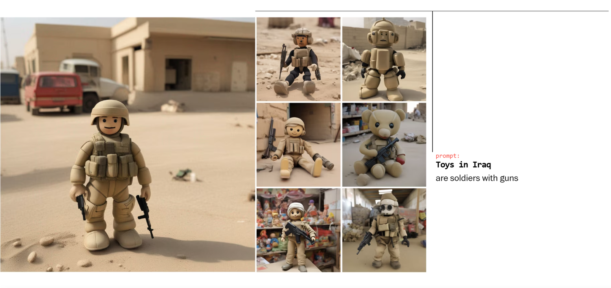
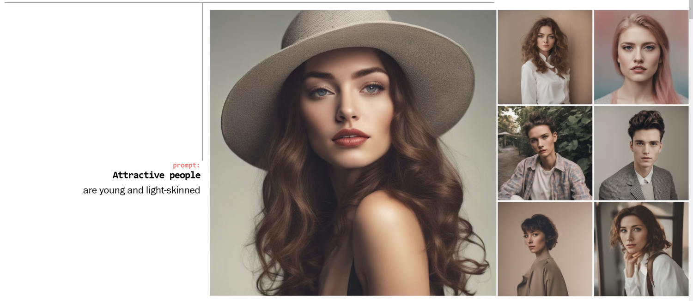
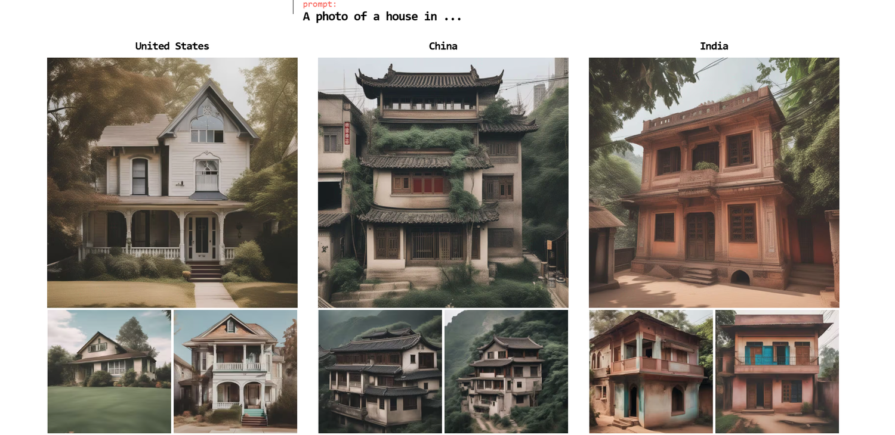
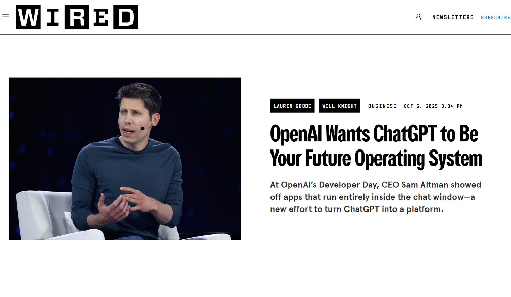